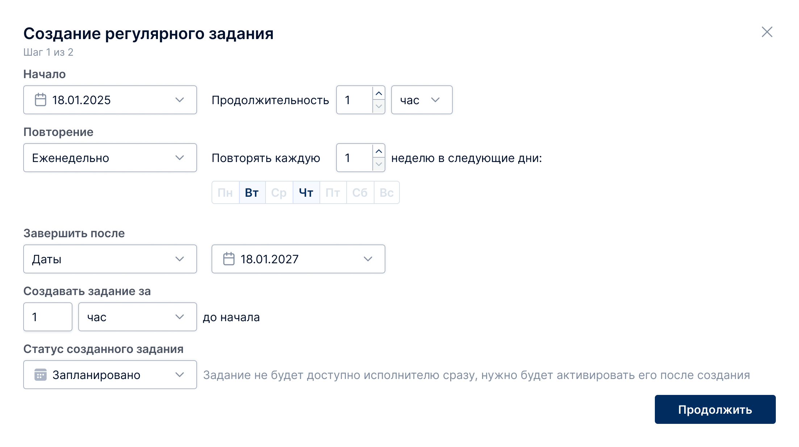

Как планируют обходы оборудования в ServiceVizor
Раньше менеджер создавал задание на каждый обход вручную и сверял даты по списку. Я спроектировала диаграмму Ганта и настройку повторов для тех, кто составляет график работ на производстве.
О проекте

Как собирали график
В отделах технического обслуживания плановые осмотры чередуются с внеплановым ремонтом. В списке ServiceVizor менеджер видел сроки каждого задания по отдельности. Чтобы понять, какие работы накладываются друг на друга на следующей неделе, приходилось сопоставлять даты. Производственные команды вели графики в Excel или рисовали их вручную.
Я поговорила с двумя менеджерами обходов об их повседневной работе. Отдельно разобрала с менеджером нашей команды, как он пользуется диаграммой Ганта, и сравнила работу со сроками в Jira, Weeek и Excel. Для первой версии мы выделили две задачи: задавать повторяющиеся обходы и менять график, видя соседние работы.
Зачем разделили разовые и регулярные задания
У планового осмотра есть расписание. Внеплановый ремонт назначают, когда оборудование выходит из строя. Мы разделили эти работы при создании задания. Для разового ремонта достаточно назначить одно задание. Для обхода менеджер задаёт правило, по которому система будет создавать задания к каждому осмотру.

У серии есть два способа завершения: в выбранную дату или после заданного числа повторов. Время создания задания и его статус настраиваются отдельно. Например, задание можно создать заранее в статусе «Запланировано» или сразу сделать доступным исполнителю.

Как сдвинуть работу в графике
На шкале видно, какие работы идут одновременно и сколько длится каждая. Менеджер может переключиться между неделей и месяцем. Цвет полосы показывает статус, а у просроченного задания появляются красная обводка и восклицательный знак.
Я разделила просмотр и редактирование. Наведение показывает детали, клик открывает карточку задания. Чтобы сдвинуть сроки или изменить длительность, менеджер перетаскивает полосу или её край и видит новое положение рядом с другими работами.
Кнопки и цвета я взяла из дизайн-системы. Для самой диаграммы понадобились плашки заданий, подсказки и маркеры повторов. Посмотреть состояния заданий

Что отложили
Мы рассматривали счётчик общей длительности работ по участку. Он показал бы объём работ даже при свёрнутом списке заданий. Суммировать длительность пришлось бы по всем уровням вложенности. Команда ожидала дополнительную нагрузку на систему, а пользу счётчика ещё предстояло проверить. В первую версию он не вошёл.

Как сравнить план с фактом
После проектирования графика я перешла к вопросу о выполненных работах. По диаграмме видно, когда назначена отдельная работа. Виджеты нужны менеджеру, чтобы разобраться, укладывается ли команда в сроки и на каких шагах инструкции возникают отклонения.